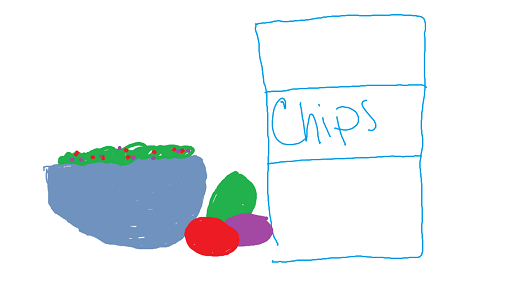

Dinner Party: Appetizer Options Page

Appetizer Options:
5 Minute Dip Recipe:
- 5 green onions chopped
- 8 oz shredded cheddar cheese
- 1 1/2 cups mayo
- 1 1/2 bacon bits
- 1/2 cup silver almonds
- - - - Mix ingredients and chill for 2 hours before serving - - -
Guacamole Recipe:
- 2 ripe avocados
- 1/2 tsp salt
- t tblsp lemon juice
- 2 tblsp chopped onion
- 1-2 serrano chiles
- 2 tblsp chopped cilantro
- dash of pepper
- 1/2 tomato
- - - - Mash avocado and mix rest of ingredients; chill before - - -

Directory: